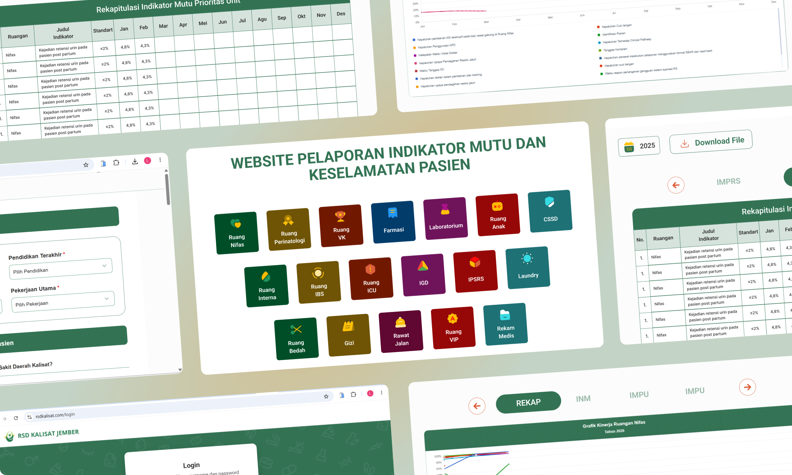

Web Development
Mengembangkan sistem informasi berbasis web untuk mendigitalisasi pengelolaan indikator mutu, survei kepuasan, dan pelaporan rumah sakit. Merancang 15+ tabel database relasional, mengembangkan 30+ halaman web, serta mengimplementasikan fitur CRUD, dashboard, dan pelaporan menggunakan PHP dan PostgreSQL.